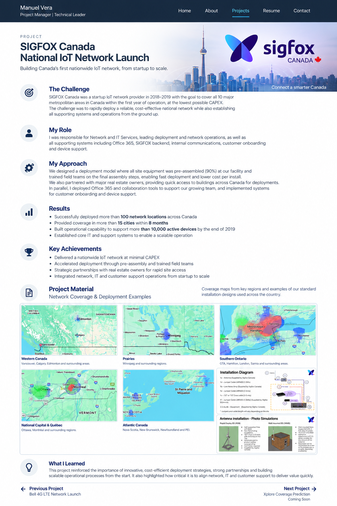

National SIGFOX IoT Network Launch
Building a startup IoT network from the ground up — combining a low-CAPEX deployment model, national real-estate partnerships and the IT systems required to support the business and its customers.
Rapid national coverage with startup economics
SIGFOX Canada was a startup IoT network provider launched with an ambitious objective: provide coverage across Canada’s 10 major metropolitan areas within its first year of operation.
The business challenge was to achieve that footprint at the lowest practical CAPEX. The deployment model therefore needed to be fast, repeatable and cost-efficient while still creating the operational foundation required to support a growing national IoT service.
Network and IT Services leadership
I was responsible for Network and IT Services, covering both the external IoT network and the internal technology environment required to operate the company.
My scope included network deployment and operations, Microsoft Office 365, the SIGFOX backend, customer onboarding, device support, and the tools used by our staff for internal communication and support.
Design deployment for speed and low cost
Instead of treating every site as a custom field installation, we moved as much work as possible into a controlled pre-deployment process.
This approach reduced the amount of specialized work required at each location, accelerated field execution and helped lower the cost per installation.
Building the systems behind the network
The physical network was only one part of launching the company. In parallel with the national deployment, I managed the rollout of Microsoft Office 365 and the internal tools needed for communication and staff support.
I was also responsible for the SIGFOX backend environment and the processes supporting customer onboarding and device support, connecting network operations with the systems customers and employees relied on.
Network, business systems and customer support
Managing Network and IT Services together provided an end-to-end view of the operation: from bringing a new radio location online, through backend availability and internal collaboration, to onboarding customers and supporting their connected devices.
More than 100 locations deployed in eight months
The standardized deployment model and national partnerships enabled SIGFOX Canada to move beyond its original first-year coverage objective while building the supporting operational environment in parallel.
Startup execution from infrastructure to customer support
National Network Coverage
Coverage views from the SIGFOX Canada rollout illustrate the geographic reach created by the deployment program across Western Canada, the Prairies, Ontario, Québec and Atlantic Canada.

Standardization can turn startup constraints into an execution advantage
The SIGFOX rollout demonstrated how simplifying work before it reaches the field can materially improve both deployment speed and cost. Pre-assembly, repeatable installation methods and strategic access partnerships allowed a small organization to execute at national scale, while building IT and customer-support capabilities in parallel ensured the network could become an operating business rather than simply a collection of deployed sites.